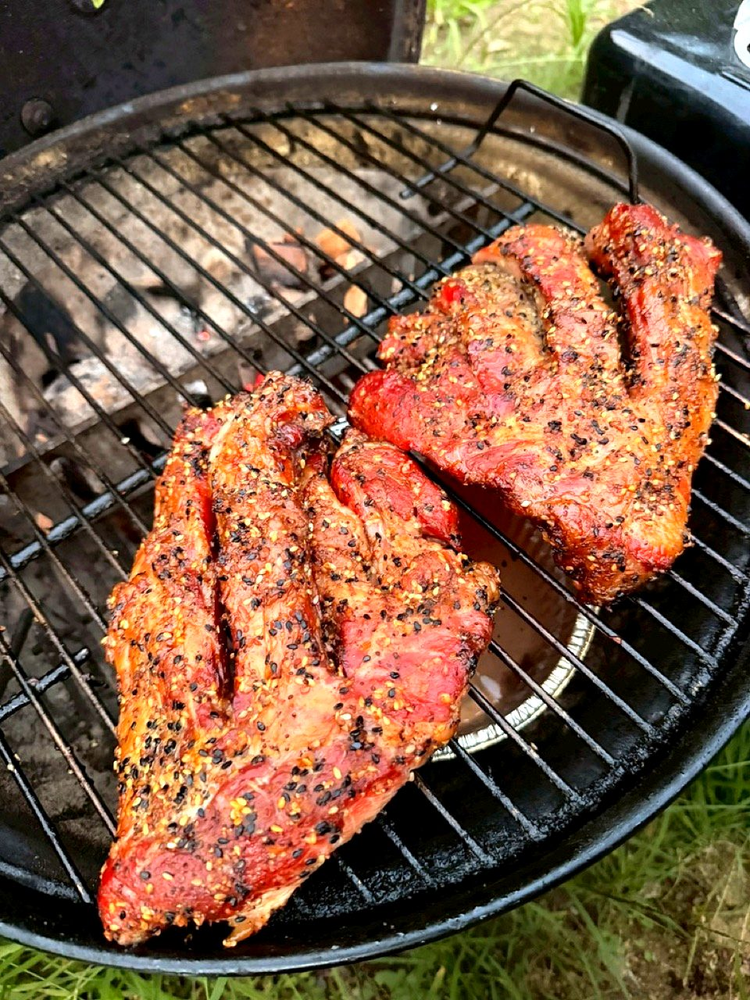

BBQ雨対策完全ガイド — 中止せずに楽しむ7つの作戦と屋根付き施設リスト
楽しみにしていたBBQの日に、天気予報がまさかの雨。あの「どうしよう……」という気持ち、よく分かります。でも、BBQ予定日の雨って、じつは「中止か決行か」の二択じゃないんです。降水量、風速、気温、参加者構成、施設の選択肢。これらを掛け合わせてあげれば、ほとんどの雨は「楽しむ方向に倒せる」というのがSLOW FIRE の立場です。豪雨の中で無理に決行するのも、小雨で安易に中止してしまうのも、どちらも少しもったいないんですよね。この記事では、降水量別の判断基準、タープ・テントの選び方、屋根付きBBQ施設の探し方、室内BBQへの切替、延期判断のタイミングまで、雨天時の戦略をまるごと体系化しました。雨を嫌いになるのではなく、雨の中の薪の匂いと焚き火の温かさを、むしろ味方にする——そんな方法をお話ししていきます。

雨天BBQの判断基準 — 降水量・風速・気温の3軸
BBQの雨天判断で「なんとなく無理そう」と感情で決めるのが最大の失敗パターンです。SLOW FIRE が現場で使う判断基準は降水量・風速・気温の3軸。これを掛け算で見ることで、決行・移動・中止が一目で決まります。
| 降水量 | 体感 | BBQ可否 | 推奨対策 |
|---|---|---|---|
| 0〜1mm/h | 霧雨・ぱらつき | ◎ 決行可 | 通常のタープで十分 |
| 1〜3mm/h | 傘が必要な小雨 | ○ 工夫すれば可能 | 大型タープ＋床面対策 |
| 3〜10mm/h | 本降りの雨 | △ 屋根付き必須 | 屋根付き施設へ移動 |
| 10〜30mm/h | 強い雨・地面に水たまり | × 屋外不可 | 室内BBQへ切替 |
| 30mm/h以上 | 豪雨・視界不良 | × 中止または延期 | キャンセル or 完全室内 |
風速も同じくらい重要で、風速8m/s以上はタープが飛ぶリスクが高く、火の管理も困難になります。気温は15度未満だと参加者の体感が一気に下がるので、雨＋低温＋風の三重苦の場合は早めに撤退判断を。
作戦① 小雨ならタープで決行
降水量1mm/h以下の小雨なら、むしろ雨を楽しむ方向に倒してしまうのがSLOW FIRE の流儀です。タープの下で炭を焚くと、湿った空気に薪の香りがふわっと充満してきます。これは晴天では絶対に味わえない、雨の日だけの贅沢な時間なんですよね。
小雨BBQの装備
- 大型タープ（4×4m以上） — グリル・テーブル・人数全部をカバーできるサイズ
- ペグ＋ロープ（風対策） — 通常より太め・長めのペグを準備
- レインコート / 防水ジャケット — タープ外移動用
- 長靴 / 防水シューズ — 地面のぬかるみ対策
- 地面用ブルーシート — 泥はね・湿気対策
- 使い捨てカイロ（春秋） — 雨で体感温度が下がる
雨天時の必需品はBBQ持ち物リストに詳しくまとめています。タープを張る位置は風上に低く、風下に高く。これだけで雨の吹き込みが3分の1に減ります。
雨天時はあえて「焚き火型」に寄せる
小雨BBQの楽しみ方として、SLOW FIRE が提案するのは焚き火寄りの構成です。ステーキを派手に焼くより、スープを煮込む、マシュマロを焼く、ホットワインを温める、といったゆったりした料理に切り替える。雨の音と火の音が重なる時間は、晴天では味わえない情緒があります。
作戦② 中雨は屋根付き施設へ移動
降水量3mm/h以上の本降りでは、自前のタープでは限界があります。このときの最適解は屋根付きBBQ施設への移動・予約。前日にこの判断ができていれば、当日のストレスはゼロです。
屋根付き施設のメリット
- 雨で予定が崩れない安心感
- 機材レンタル込みで荷物が減る
- 子ども連れでも安全に楽しめる
- 後片付けがほぼ不要
- 夏は日陰になり熱中症対策にもなる
屋根付き施設のデメリット
- 当日予約は埋まりやすい（前日までに予約推奨）
- キャンセル料が3日前から発生することが多い
- 自前グリル・道具が使えない場合がある
- 1人2,500〜5,000円と公園BBQより割高
判断のコツは「雨予報が出た瞬間に屋根付きに予約変更」。前日昼までに動けば、ほとんどの施設で空きがあります。週末・連休の場合は、晴天時に公園BBQを予約しつつ屋根付きの予備予約も併用するのが上級者の戦略です。
作戦③ 豪雨は室内BBQに切替
降水量10mm/h以上の豪雨や、雷を伴う雨の場合は無理せず室内BBQに切替。安全と楽しさを両立する唯一の選択肢です。自宅BBQの実践ガイドでも詳しく扱っていますが、雨天時の室内BBQには独自のコツがあります。
室内BBQの3つの選択肢
- ホットプレート — 一番手軽。ただし火力が弱く焼肉感は出にくい
- 卓上ロースター（イワタニ等） — ガス式で火力が強く、焼肉店に近い体験
- 無煙ロースター（ザイグル等） — 上から熱するタイプで煙が出にくい。マンション向き
室内BBQで最も重要なのは煙対策。換気扇全開＋窓開放＋扇風機で煙を外に逃がす導線を作るのが必須です。マンションでは特に注意が必要で、煙感知器の真下では絶対に焼かないこと。
BBQ用タープ・テントの選び方
雨天BBQの心臓部はタープです。キャンプ用とBBQ用は別物であることを理解せずに買って、火の粉でタープに穴が空くという失敗が多発しています。
タープの素材別比較
| 素材 | 耐水圧 | 耐火性 | 価格 | BBQ適性 |
|---|---|---|---|---|
| ポリエステル（PU加工） | 2000mm前後 | 低（火の粉で穴） | 1〜2万円 | △ 火元から距離取る |
| TC素材（ポリコットン） | 350〜500mm | 高（火の粉に強い） | 2〜4万円 | ◎ BBQに最適 |
| コットン100% | 500〜800mm | 非常に高い | 4〜8万円 | ◎◎ 焚き火OK |
| シルナイロン | 1500mm前後 | 低 | 3〜5万円 | × BBQには不向き |
初心者でBBQ年3回程度ならポリエステルの大型タープ（1万円台）で十分。本格派ならTC素材のレクタタープを選び、グリルから2m以上離して張るのが鉄則です。Snow Peak「HDタープ シールド・ヘキサ」、DOD「いつかのタープ」、Ogawa「フィールドタープ ヘキサ」が定番です。
グリルの真上にタープを張らない
初心者が必ずやってしまう失敗がグリル真上のタープ設営。煙でタープが汚れるだけでなく、火の粉で穴が空き、最悪火災のリスクがあります。グリルはタープの外周ぎりぎり外側に設置し、煙突から空が見える状態に。テーブルと食事スペースだけタープ下に入れるのが正しい配置です。
屋根付きBBQ施設の探し方リスト
屋根付き施設を見つけるための実用的な探し方をまとめました。「地名＋BBQ＋屋根付き」でGoogle検索するのが最速ですが、より確実なのは予約サイトの絞り込み機能を使うこと。
主要予約サイトと絞り込みキーワード
- なっぷ — 「屋根付き」「雨天決行可」のフィルター充実
- じゃらん遊び・体験 — 「BBQ＋雨天OK」で絞り込み
- アソビュー — 「屋根あり」タグで一覧化
- 食べログBBQ — 屋上ビアガーデン型に強い
- Yahoo!ロコ・ホットペッパー — 都市部の手ぶらBBQに強い
確認すべき5項目
- ① 屋根の素材（テント布 / 固定屋根 / 完全室内）
- ② 横風の吹込み度合い（壁あり / 一面開放）
- ③ 機材レンタルの有無と料金
- ④ 雨天時のキャンセルポリシー
- ⑤ 換気状況（屋内なら煙感知器・換気扇の有無）
SLOW FIRE が現場で使うリサーチ手順は、①予約サイトで候補3つに絞る ②各施設の電話で「豪雨でも開催可能か」確認 ③Google マップの写真で屋根のリアルな広さを確認。この3ステップで失敗率がゼロに近づきます。
室内BBQの実践 — ホットプレート・無煙ロースター
豪雨で屋外不可となった場合、自宅に切り替えるなら室内BBQが正解。「BBQの代わり」ではなく「BBQの別バージョン」として楽しめば、十分に満足度の高いイベントになります。
機材別の特徴と適性
| 機材 | 価格 | 火力 | 煙 | 適した料理 |
|---|---|---|---|---|
| ホットプレート（BRUNO等） | 1〜2万円 | 弱 | 少 | 焼肉・お好み焼き |
| イワタニ炉ばた焼器 | 8,000円前後 | 強 | 多 | 焼鳥・焼肉 |
| ザイグル無煙ロースター | 2〜3万円 | 中 | 極少 | 焼肉・ステーキ |
| イワタニ網焼きプレート | 3,000円前後 | 強 | 多 | 本格焼肉 |
| オーブン＋鋳鉄スキレット | 既存品 | 強 | 少 | ステーキ・本格BBQ |
室内BBQの煙対策5箇条
- ① 換気扇は「強」で連続稼働
- ② 窓を対角に2箇所開けて空気の通り道を作る
- ③ サーキュレーター / 扇風機を窓向きに設置
- ④ 火災報知器の真下では焼かない
- ⑤ 煙が多い肉（脂多めの牛バラ等）は事前にキッチンで下処理
料理は薄切り肉の焼肉スタイルにシフトするのが現実的。塊肉のロー&スローは屋外グリルでないと再現できないため、室内では潔く焼肉スタイルへ。詳しい料理スタイルの違いは焼肉BBQから本格BBQへの移行ガイドを参照してください。
延期判断のタイミングと連絡術
延期判断は「前日19時」が黄金タイミング。それより遅いと、参加者の予定変更・食材廃棄・キャンセル料発生で全員に負担が集中します。
延期判断の3つの基準
- ① 降水確率70%以上＋降水量5mm/h以上の予報 — 屋外決行は厳しい
- ② 参加者に高齢者・乳幼児・体調不良者がいる — 安全優先で延期
- ③ 屋根付き代替施設の予約が取れない — 中止のサイン
延期連絡のテンプレート
皆さま、お疲れさまです。明日のBBQですが、降水量5mm/hの予報と気温低下を受けて、延期させていただきます。新日程候補は5/YY（土）または5/ZZ（日）です。明日19時までにご都合をお知らせください。食材の保存方法は別途共有します。
延期先は1〜2週間以内の同じ曜日に設定するのが定石。長く延ばすほど参加者の熱量が冷めます。買ってしまった食材は、肉なら冷凍庫で2週間保存可能、野菜なら3日以内に消費、調味料は無期限保存。延期に伴う食材ロスを最小化する設計です。
雨天決行後のアフターケア
雨天でBBQを決行した後は、機材の乾燥・カビ対策が最重要。これを怠ると、次回使うときにグリルが錆びている、タープにカビが生えている、という事態が起きます。
機材別アフターケア
- グリル — 帰宅後すぐに灰を捨て、本体を乾拭き＋油塗布で錆び防止
- タープ — 完全乾燥が必須。ベランダで1〜2日かけて陰干し。湿ったまま収納すると確実にカビる
- ペグ・ロープ — 泥を洗い流して乾燥。錆びる前に油塗布
- クーラーボックス — 内側を洗剤洗浄＋蓋を開けて乾燥
- レインコート・防水ジャケット — 専用洗剤で洗濯＋撥水加工再付与
雨天BBQで一番投資価値が高いのはジップロックの大型サイズ。濡れた電子機器・財布・スマホをそのまま入れて運べるので、当日のストレスが激減します。持ち物リストと合わせて常備しておきましょう。
夏のゲリラ豪雨対策
夏のBBQ（6〜9月）ではゲリラ豪雨が最大のリスク。晴天予報でも当日午後に突然の雷雨が来ます。詳しい夏のBBQ戦略は夏のBBQ完全ガイドで扱っていますが、雨対策の観点では以下が必須です。
- 朝の天気予報＋気象庁ナウキャストを1時間ごと確認
- 積乱雲が発達したら30分以内に撤収判断
- 雷の音が聞こえたら即時撤収（10km以内）
- 大型タープでも豪雨では浸水するので、ブルーシートで荷物カバー
- 車を近くに駐車して避難場所として使う
CONCLUSION
結論
BBQの雨は「中止」ではなく「設計変更」。降水量・風速・気温の3軸で判断し、小雨ならタープで決行、中雨なら屋根付き施設、豪雨なら室内BBQ。この3段階の作戦を持っておけば、雨予報で慌てて中止する必要はなくなります。
SLOW FIRE は、雨の中の薪の匂いや、タープを叩く雨音を、BBQの「特別な記憶」として楽しめる文化を提案しています。晴天だけが正解では、けっしてないんですよね。雨ならではの静かで濃密な時間こそ、SLOW FIRE が大切にしているBBQの本質だと思っています。次回の雨予報には、慌てずにタープを広げてみてください。
FAQ
BBQ雨対策についてよくある質問
BBQ予定日が雨予報のとき、中止と決行の判断基準は？
判断基準は「降水量1時間あたり何mmか」「風速何m/sか」「気温何度か」の3つ。1mm/h未満で風速5m/s以下なら決行可、3mm/h以上または風速8m/s以上なら中止または屋根付きへ切替が推奨。前日19時の予報で判断し、当日朝6時に最終確認するのが理想です。
雨天でもBBQができるタープの選び方は？
BBQ用タープは「耐水圧2000mm以上」「遮光率90%以上」「火に強いポリエステル600D以上」が最低条件。グリルの上にタープを張る場合は「耐熱性能・煙突穴」があるTC素材（ポリコットン）が必須。コットン100%は重いが火の粉に最強。Ogawa・Snow Peak・DODが本格派の定番です。
屋根付きのBBQ施設はどう探せばいいですか？
「地名＋BBQ＋屋根付き」または「地名＋BBQ＋雨天可」でGoogle検索が最速。なっぷ・じゃらん・アソビューなどの予約サイトでも「屋根付き」「雨天決行」でフィルター可能。施設に直接電話して「豪雨でも開催可能か」を確認するのが確実です。前日キャンセル料の規定も併せて確認を推奨。
雨でBBQができないとき、室内に切り替える方法は？
室内BBQの選択肢は「ホットプレート」「卓上ロースター」「無煙ロースター」の3つ。煙対策が肝で、無煙ロースター（イワタニ・ザイグル等）が最も実用的。換気扇全開＋窓開放を徹底し、肉は薄切り中心に切り替え。屋外の塊肉スタイルは諦めて、焼肉スタイルにシフトするのが現実的です。
BBQを延期する場合、ベストなタイミングは？
延期判断は「前日19時」が理想。それ以降の判断は、参加者の予定変更・食材の冷凍・施設キャンセル料発生で全員に負担がかかります。延期先は1〜2週間以内の同じ曜日に設定し、参加者全員のスケジュールを確認。食材は冷凍保存可能なものだけ買って、当日朝に追加調達するのが安全です。
PERFECT WITH
雨でも気分が上がるBBQラブ4選
屋内・屋外問わず、肉の質を底上げする万能スパイス